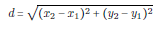

Mid Point and Distance Formulas Section
Mid Point Formula The mid point is simply the middle point between two other points. Thus, it is found simply by averaging the x values of the two points and the y values of the two points.

Distance Formula The distance formula is simply the Pythagorean Theorem. If you can't remember it, just sketch the two points, form a triangle, and then perform the Pythagorean Theorem.

All done!